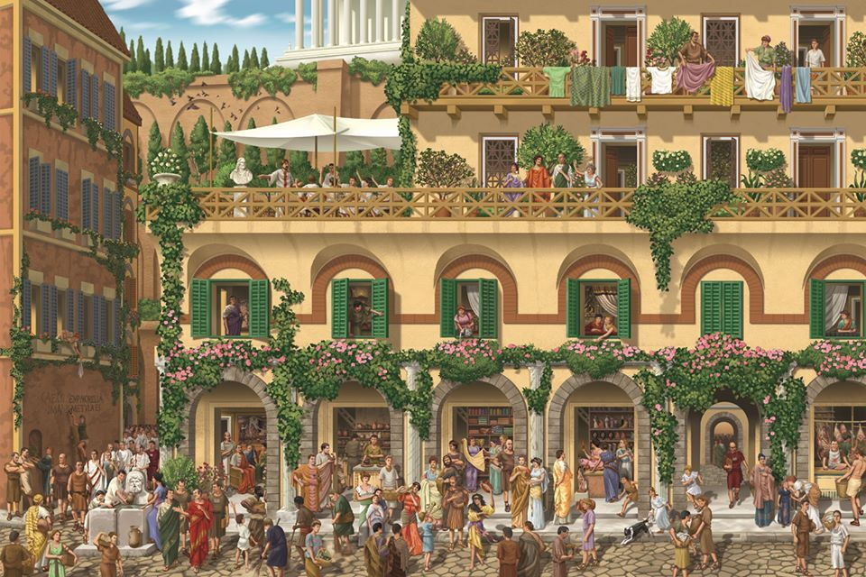
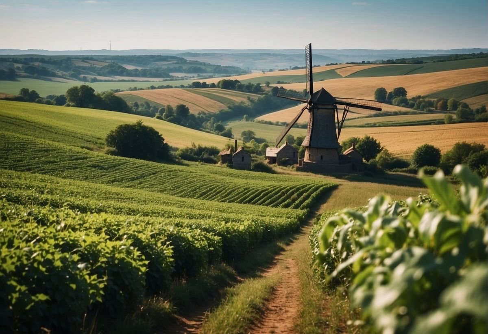
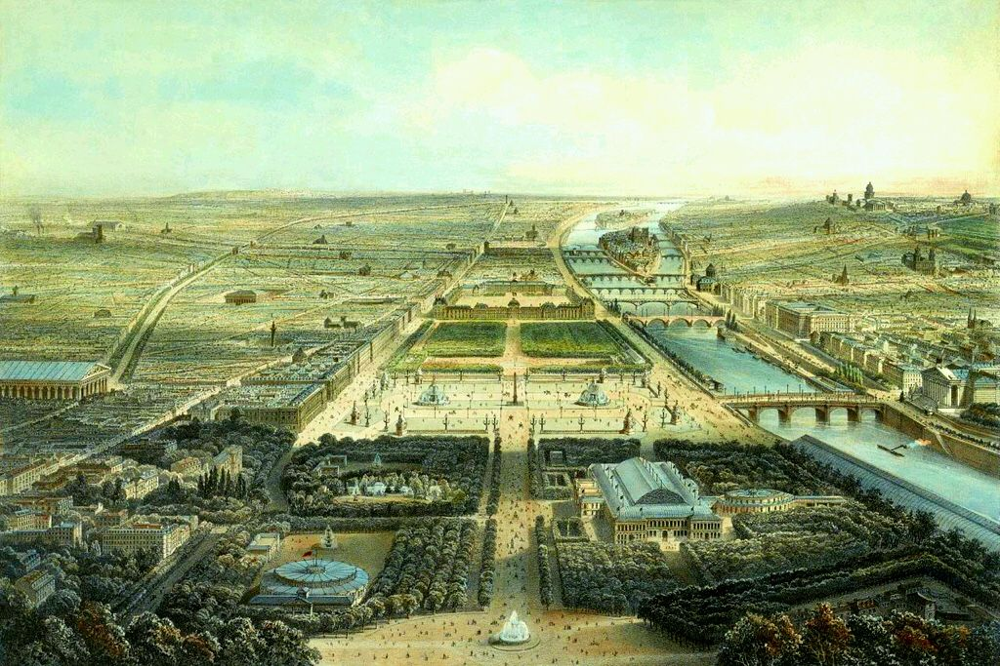

Ancient Civilizations
Ancient civilizations such as Egypt, Persia, and Rome created gardens and green areas for beauty, relaxation, and farming. These spaces represented peace and harmony with nature.

Industrial Revolution
During the 1800s, cities became crowded and polluted. Public parks were introduced to improve public health and provide cleaner environments for communities.

Modern Urban Planning
In the 1900s, green spaces became important in city planning. Urban parks, playgrounds, and gardens helped support healthier lifestyles and environmental sustainability.

Smart Green Spaces 2050
Future green spaces will include smart irrigation systems, solar lighting, environmental sensors, and eco-friendly technologies to create sustainable smart cities.